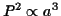

- Builds improved instruments, becomes greatest pre-telescopic observational astronomer
- Smashes "celestial sphere" idea
- 1558: Partial solar eclipse
- 1572: Supernova in Cassiopeia
- No measured parallax
 well beyond the moon in Aristotle's celestial realm
well beyond the moon in Aristotle's celestial realm
- Heavenly change, contradicts Aristotelian cosmos
- No measured parallax
- 1577: Comet
- Limits on parallax
at least 6
farther than Moon
- No mere "atmospheric phenomenon"
- Limits on parallax
- Tycho builds grandiose observatory Uraniborg, ``Castle of the Heavens''
- Weak theoretician
- Joins Kepler to help interpret data
- Excellent mathetician/theoretician
- First outspoken defense of Copernicus (50 yrs after death!)
- Carried out the analysis of Tycho's data and developed 3
empirical laws which described the behavior of the planets in their
orbits.
- Planetary orbits are ellipses with Sun at one focus
- Orbits sweep out equal areas in equal times
- Distance to the Sun (a) related to Period (P) about the Sun:

- Smashes the dogma of uniform circular motion
- No more epicycles
- Searches for but does not discover the physical causes of planetary motion
(i.e., gravity)
- Kepler thinks the planets are held in their orbits by "magnetic" force from Sun which "diminishes in ratio to distance as does the force of light"
- Kepler's cosmos and the Holy Trinity: Father--Sun at center, Son--Sphere of stars at circumference, Holy Ghost--force from Sun in intervening space